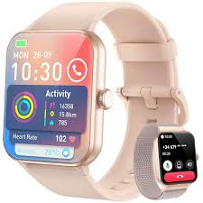

Image Lab — Gallery
Practice with <img>, srcset, <picture>, SVG, and accessibility
Rice — Bag
Assorted Snacks Box

Smart Tracker Watch
Decorative Social Icon
Click a section to view item
Notes
- All images are loaded locally from the
images folder.
loading="lazy" helps defer loading off-screen images.